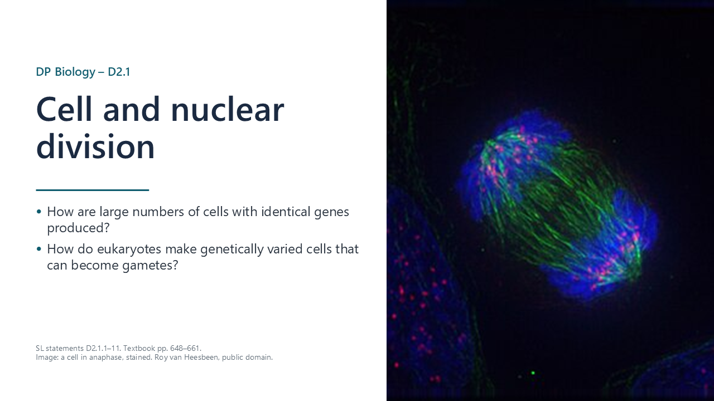
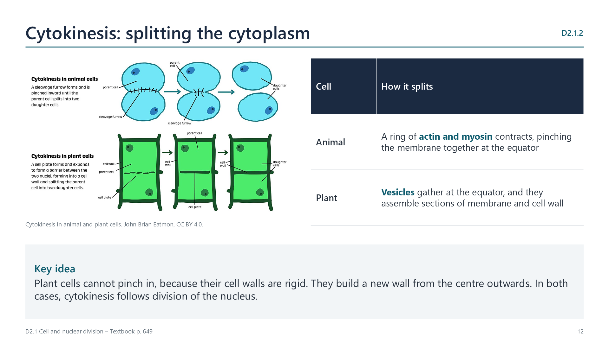
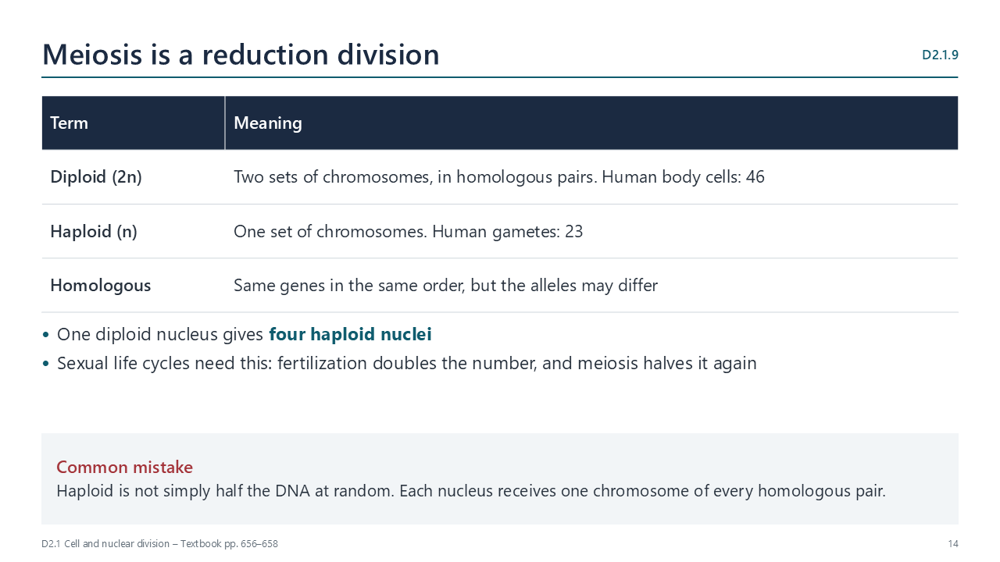
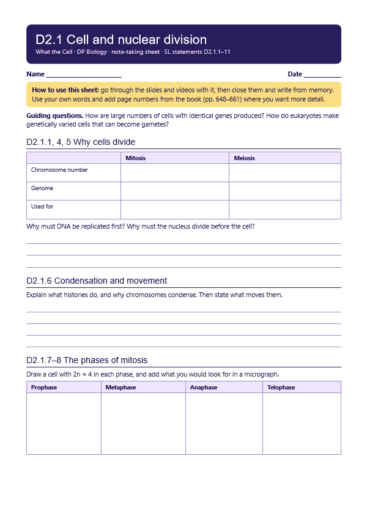
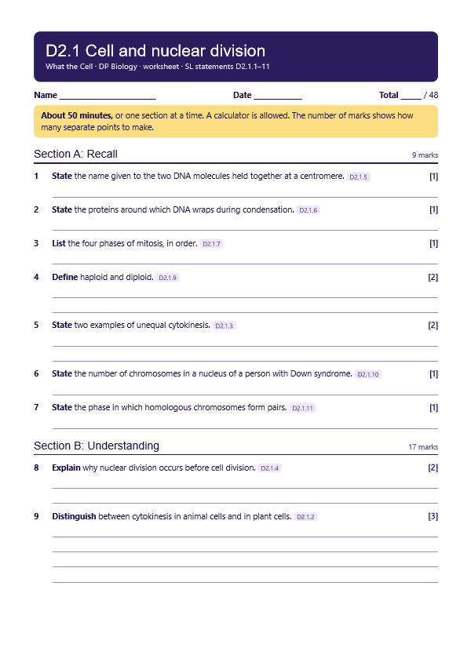
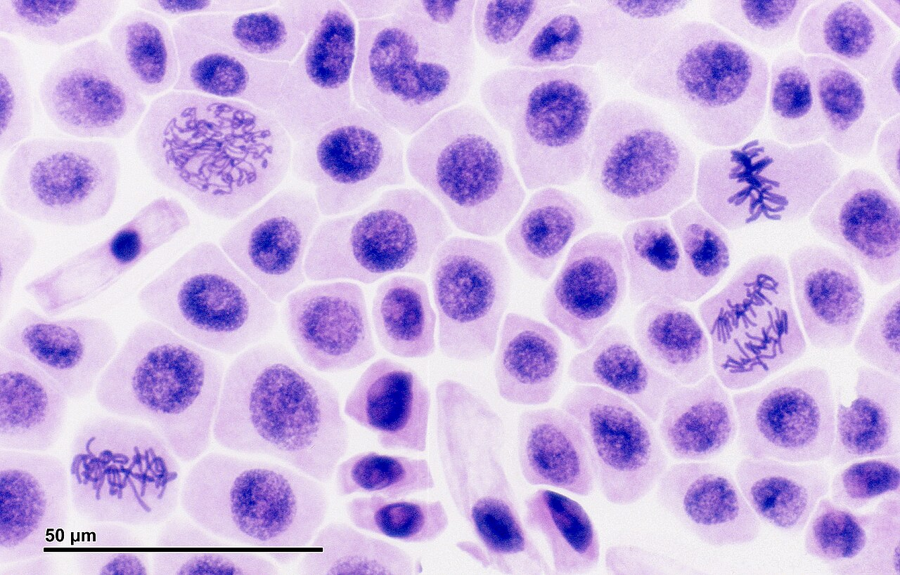
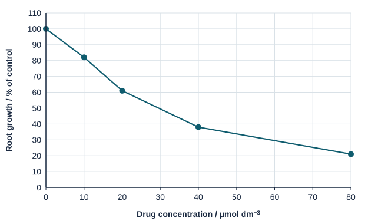

Making new cells
p. 648A parent cell, often called a mother cell, divides to form two daughter cells. New cells arise only by division of existing cells. Division provides for growth, repair, maintenance and reproduction.

Written for this site from the course textbook and class slides, with page references for each statement. The chapter is on pages 648–661 of the course textbook. Image credits are on slide 30.
A parent cell, often called a mother cell, divides to form two daughter cells. New cells arise only by division of existing cells. Division provides for growth, repair, maintenance and reproduction.
Mitosis maintains the chromosome number and the genome. Meiosis halves the chromosome number, and generates genetic diversity. The nucleus divides before the cell, so that no anucleate cells are produced.
Replication in interphase gives each chromosome two DNA molecules, called chromatids, held together at a centromere. Each new nucleus can then receive a full set of genes.
Watch out: a replicated chromosome still counts as one chromosome. Once chromatids separate, each is counted as a chromosome.
DNA wraps around proteins called histones, and further coiling, known as supercoiling, gives short, compact chromosomes. Microtubules form a spindle, and microtubule motors use ATP to move the chromosomes. Both mitosis and meiosis share these features.
Watch out: centromere, centrosome and centriole are three different structures.

Mitosis gives two identical nuclei. DNA is copied exactly, and then one chromatid of each chromosome moves to each pole.
The mitotic index is the number of cells in mitosis divided by the total number of cells.

In animal cells, a ring of actin and myosin contracts and pinches the membrane together. In plant cells, vesicles gather at the equator and assemble sections of membrane and cell wall.
Cytoplasm is usually shared equally. In oogenesis in humans, the egg keeps most of it, and in yeast budding a small bud forms. Each daughter cell needs at least one mitochondrion, and any other organelle made only by dividing an existing one.
Diploid nuclei have two sets of chromosomes, in homologous pairs, and haploid nuclei have one set. One diploid nucleus gives four haploid nuclei. Sexual life cycles need this, since fertilization doubles the number.
| Meiosis I | Meiosis II | |
|---|---|---|
| Separates | Homologous chromosomes | Sister chromatids |
| Result | Two haploid nuclei | Four haploid nuclei |
In non-disjunction, chromosomes fail to separate in meiosis. If a gamete with two copies of chromosome 21 is fertilized, the zygote has three copies, and 47 chromosomes in total. This is trisomy 21, or Down syndrome. The risk rises with the age of the mother.
Random orientation: each bivalent lines up independently in metaphase I. With a haploid number of n, there are 2 to the power n combinations, which is over 8 million in humans.
Crossing over: in prophase I, non-sister chromatids swap sections, giving new combinations of alleles on a chromosome.
Watch out: neither process creates new alleles. Only mutation does that.
Select a video to play it here. Select it again to close it.
Print this guide and complete it as you work through the slides and videos. It asks for your own explanations, so close the notes while you try each section.

The self-check needs JavaScript to run.
A printable worksheet covering all eleven statements, from quick recall to data questions and a longer answer. It has 48 marks and takes about 50 minutes, or you can do one section at a time.
Your teacher has the mark scheme.

Questions built on realistic experimental data, in the style of Paper 1B and Paper 2. Work them on paper and show your working. 9 marks in total. Your teacher has the mark scheme.

Onion root tips were grown for 24 hours in different concentrations of a drug being tested as an anticancer treatment. Root growth was measured, and cells from the tips were stained and counted.
| Drug / µmol dm−3 | 0 | 10 | 20 | 40 | 80 |
|---|---|---|---|---|---|
| Mitotic index / % | 12 | 15 | 19 | 24 | 27 |
| Cells in anaphase per 100 cells in mitosis | 21 | 14 | 8 | 4 | 2 |

You will need: Prepared slides of Allium root or shoot tip, microscope, tally chart
Safety: Use prepared slides to avoid acid and stains. Carry microscopes with two hands.
Carry this out with your teacher's supervision and follow your school's lab rules.
New staining methods let Walther Flemming describe mitosis in 1882, showing how technique can open up what is visible.
Stains and fixatives alter cells before we see them, and cells on a slide are dead. How do we know that what we see is not an artefact?
Predict first, then check. Each one opens on the Think deeper pages.
Summarised in our own words. Use each code to find the exact wording in your textbook or the IB subject guide.
© 2026 Akash Parthi Bendran. Please ask before using or sharing any resources from this site: see permission to use.